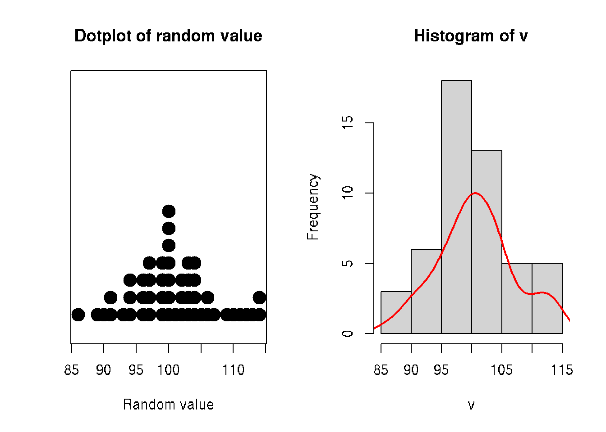
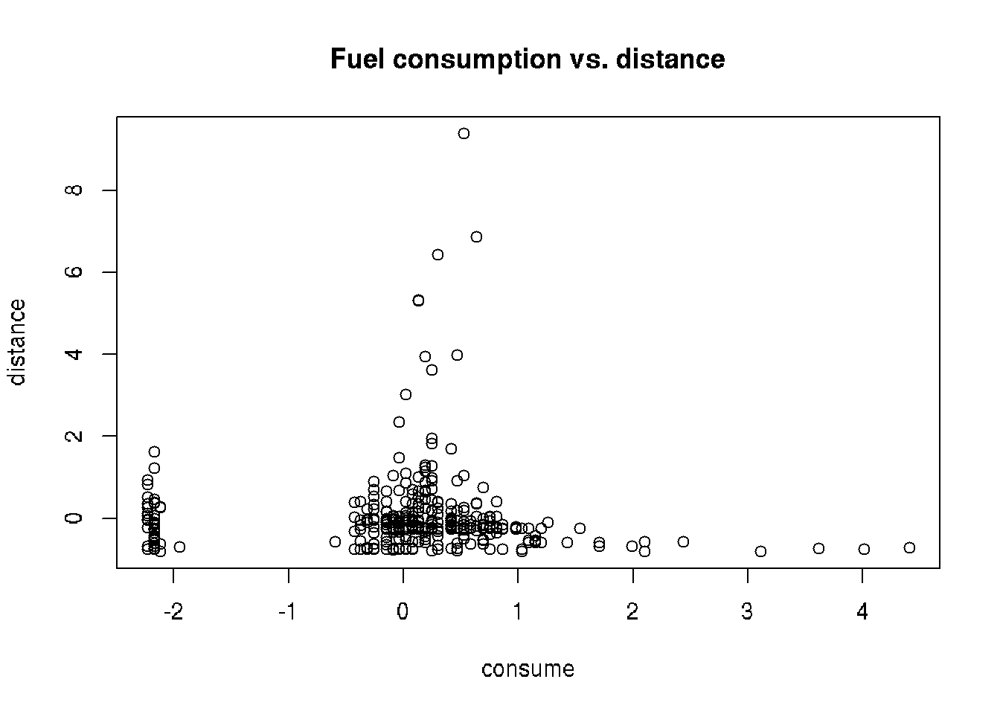
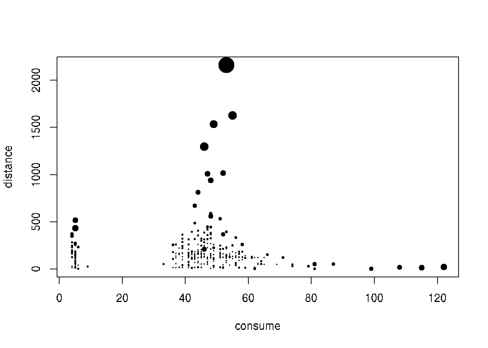
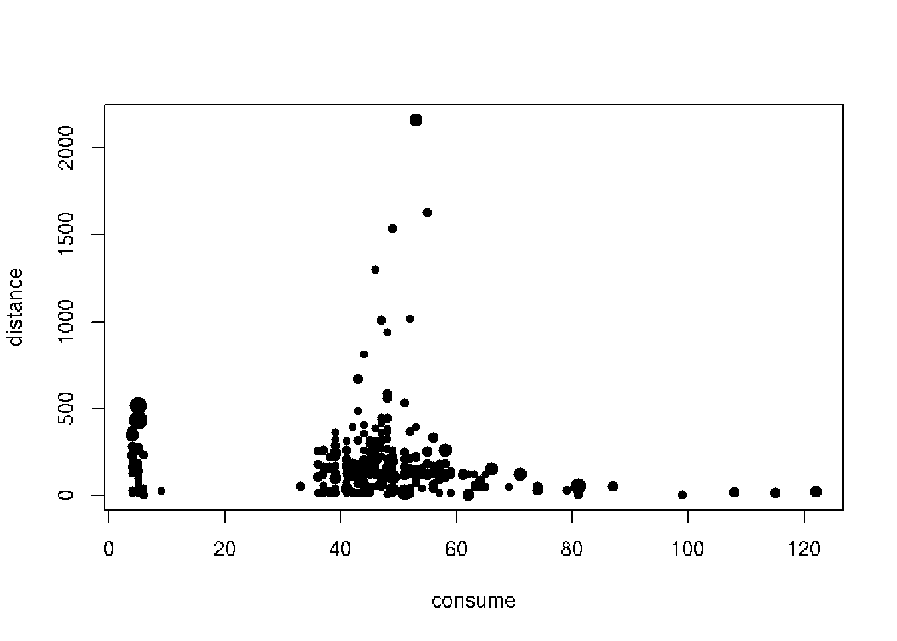

Chapter 8 Primary data analysis
8.1 Analysis of sample distribution
8.1.1 Histogram
# sample of random integers
v <- round(rnorm(n=50, sd=5, mean=100))
par(mfrow=c(1,2))
stripchart(v, method = "stack", pch=19, cex=2, offset=.5, at=.15,
main = "Dotplot of random value", xlab = "Random value")
hist(v)
# add density
x <- density(v)$x
y <- (10/max(density(v)$y))*density(v)$y # scale y to plot with histogram
lines(x, y, col="red", lwd=2)
8.2 Handling missing data
- Ignore: Discard samples with missing values.
- Impute: ‘Fill in’ the missing values with other values.
- Accept: Apply methods that are unaffected by the missing data.
library(naniar)
mammographic <- read.csv('./DATA/mammographic.data')
any_na(mammographic)
# Replace ? with NAs: bands
mammographic <- replace_with_na_all(mammographic, ~.x == '?')
any_na(mammographic)
miss_var_summary(mammographic)Vizualysing missing data
library(ggpubr)
a <- vis_miss(mammographic)
# comulative
b <- vis_miss(mammographic, cluster=TRUE)
c <- gg_miss_case(mammographic)
ggarrange(a, b, c + rremove("x.text"),
labels = c("frame view", "cumulative", "missing"),
ncol = 3, nrow = 1)Missing data types
- MCAR: Missing Completely At Random
- MAR: Missing At Random
- MNAR: Missing Not At Random
| Type | Imputation | Deletion | Visual cues |
|---|---|---|---|
| MCAR | Recommended | Will not lead to bias | Random or noisy patterns in missingness clusters |
| MAR | Recommended | May lead to bias | Well-defined missingness clusters when arrangin for a particular variable(s) |
| MNAR | Will lead to bias | Will lead to bias | Neither visual pattern above holds |
It can be difficult to ascertain the missingness type using visual inspection!
Internal evaluation
Compair distributions with/without imputed values:
- Mean
- Variance
- Scale
Exterlan evaluation Build ML models with/without imputated values and evaluate impact of imputation method on ML model performance:
- Classification
- Regression
- Clustering
- etc.
Ideally imputation should not bring big differences.
Mean and linear imputations
library(naniar)
library(simputation)
# Impute with the mean
imp_mean <- bands %>%
bind_shadow(only_miss = TRUE) %>%
add_label_shadow() %>%
impute_mean_all()
# Impute with lm
imp_lm <- bands %>%
bind_shadow(only_miss = TRUE) %>%
add_label_shadow() %>%
impute_lm(Blade_pressure ~ Ink_temperature) %>%
impute_lm(Roughness ~ Ink_temperature) %>%
impute_lm(Ink_pct ~ Ink_temperature)Combining multiple imputation models
# Aggregate the imputation models
imp_models <- bind_rows(mean = imp_mean,
lm = lmp_lm,
.id = "imp_model")
head(imp_models)8.3 Dealing with outliers
Outliers are rare values that appear far away from the majority of the data.
Outliers can bias the results and potentially lead to incorrect conclusions if not handled properly.
It is possible to remove outliers from the data but removing data points can introduce other types of bias into the results, and potentially result in losing critical information.
If outliers seem to have a lot of influence on the results, a nonparametric test such as the Wilcoxon Signed Rank Test may be appropriate to use instead.
Outliers can be identified visually using a boxplot.
- The 3-sigma rule (for normally distributed data)
- The 1.5*IQR rule (more general)
Outliers:
- any value lower that \(Q1 - 1.5 x IQR\)
- or any higher than \(Q3 + 1.5 x IQR\)
Multivariate methods
* Distance-based: K-nearest neighbors (kNN) distance
* Density-based: Local outlier factor (LOF)
**1.5*IQR rule**
Outliers:
- any value lower that \(Q1 - 1.5 x IQR\)
- or any higher than \(Q3 + 1.5 x IQR\)
Distance-based methods
- Average distance to the K-nearest neighbors
Density-based methods
- Number of the neighboring points within a certain distance
Assumption: outliers often lie far from their neighbors
Local Outlier Factor (LOF)
* Measures the local deviation of a data point with respect to its neighbors.
* Outliers are observations with substantially lower density than their neighbors.
get.knn() from FNN package
- Each observation \(x\) has an associated score LOF(\(x\))
LOF(\(x\)) \(\approx\) 1 similar density to its neighbors
LOF(\(x\)) < 1 higher density than neighbors (inlier)
LOF(\(x\)) > 1 lower density than neighbors (outlier)
lof() function from dbscan package
What to do with outlier observations?
1. Retention: Keep them in your dataset and, if possible, use algorithms that are robust to outliers.
- e.g. K nearest-neighbors (kNN), tree-based methods (decision tree, random forest)
2. Imputation: Use an imputation method to replace their value with a less extreme observation.
- e.g. mode imputation, linear imputation, kNN imputation.
3. Capping: Replace them with the value of the 5-th percentile (lower limit) or 95-th percentile (upper limit).
4. Exclusion: Not recommended, especially in small datasets or those where a normal distribution cannot be assumed.
cars <- read.csv('./DATA/cars.csv')
cars <- cars[,1:3]
head(cars)## distance consume speed
## 1 28 5 26
## 2 12 42 30
## 3 112 55 38
## 4 129 39 36
## 5 185 45 46
## 6 83 64 50boxplot(cars$consume)
consume_quartiles <- quantile(cars$consume)
consume_quartiles## 0% 25% 50% 75% 100%
## 4 41 46 52 122# Scale data and create scatterplot: cars_scaled
require(dplyr)
glimpse(cars)## Rows: 388
## Columns: 3
## $ distance <int> 28, 12, 112, 129, 185, 83, 78, 123, 49, 119, 124, 118, 123, 247, 124, 173,…
## $ consume <int> 5, 42, 55, 39, 45, 64, 44, 5, 64, 53, 56, 46, 59, 51, 47, 51, 56, 51, 49, …
## $ speed <int> 26, 30, 38, 36, 46, 50, 43, 40, 26, 30, 42, 38, 59, 58, 46, 24, 36, 32, 39…cars_scaled <- as.data.frame(scale(cars))
plot(distance ~ consume, data = cars_scaled,
main = 'Fuel consumption vs. distance')
# Calculate upper threshold: upper_th
upper_th <- consume_quartiles[4] +
1.5 * (consume_quartiles[4] - consume_quartiles[2])
upper_th## 75%
## 68.5# Print the sorted vector of distinct potential outliers
sort(unique(cars$consume[cars$consume > upper_th]))## [1] 69 71 74 79 81 87 99 108 115 122library(FNN)
# Compute KNN score
cars_knn <- get.knn(data = cars_scaled, k = 7)
cars1 <- cars
cars1$knn_score <- rowMeans(cars_knn$nn.dist)
# Print top 5 KNN scores and data point indices: top5_knn
(top5_knn <- order(cars1$knn_score, decreasing = TRUE)[1:5])## [1] 320 107 335 56 190print(cars1$knn_score[top5_knn])## [1] 4.472813 2.385471 2.246905 2.122242 1.740575# Plot variables using KNN score as size of points
plot(distance ~ consume, data = cars1, cex = knn_score, pch = 20)
library(dbscan)
# Add lof_score column to cars1
cars1 <- cars
cars1$lof_score <- lof(cars_scaled, minPts = 7)
# Print top 5 LOF scores and data point indices: top5_lof
(top5_lof <- order(cars1$lof_score, decreasing = TRUE)[1:5])## [1] 165 186 161 228 52print(cars1$lof_score[top5_lof])## [1] 2.606151 2.574906 2.328733 2.252610 2.027528# Plot variables using LOF score as size of points
plot(distance ~ consume, data = cars1,
cex = lof_score, pch = 20)